Шестнадцать стилей
Формы Дыхания Луны, созданные Кокушибо
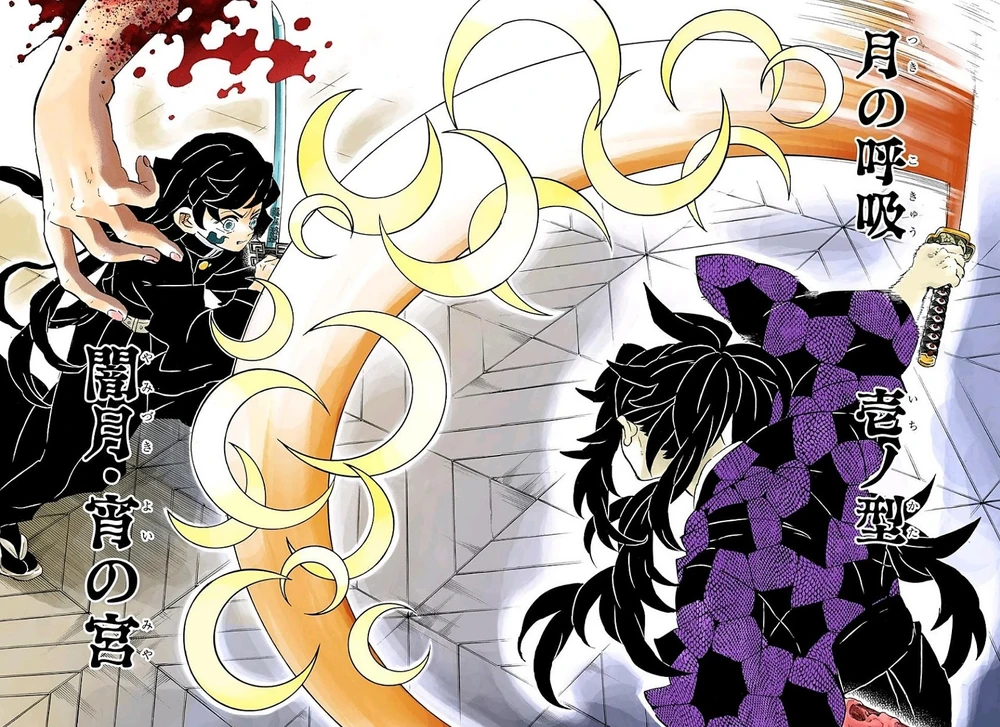
ПЕРВЫЙ СТИЛЬ
Тёмная луна: вечерняя святыня
Кокушибо совершает одиночную быструю атаку своим мечом. Как и во всех стилях дыхания луны, с разрезом появляется множество хаотичных клинков.
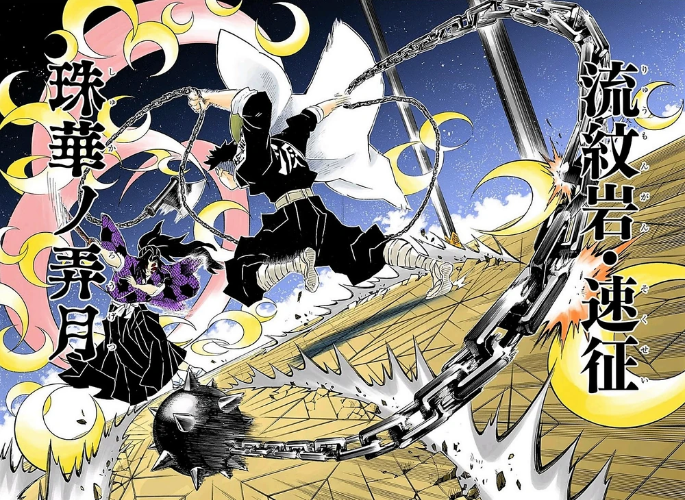
ВТОРОЙ СТИЛЬ
Лунные жемчужные цветы
Кокушибо совершает несколько разрезов, выпуская вперёд шквал хаотичных клинков.
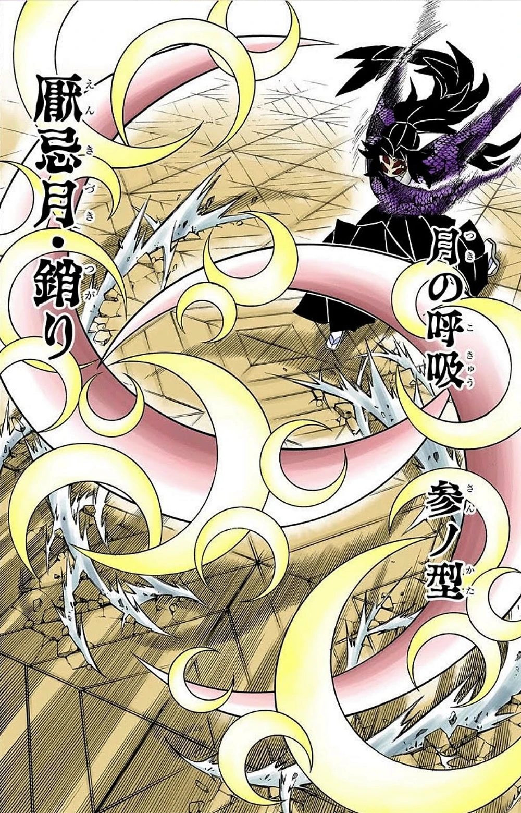
ТРЕТИЙ СТИЛЬ
Ненавистная луна: цепи
Кокушибо совершает два взмаха мечом в форме полумесяца, создавая перекрестные разрезы.
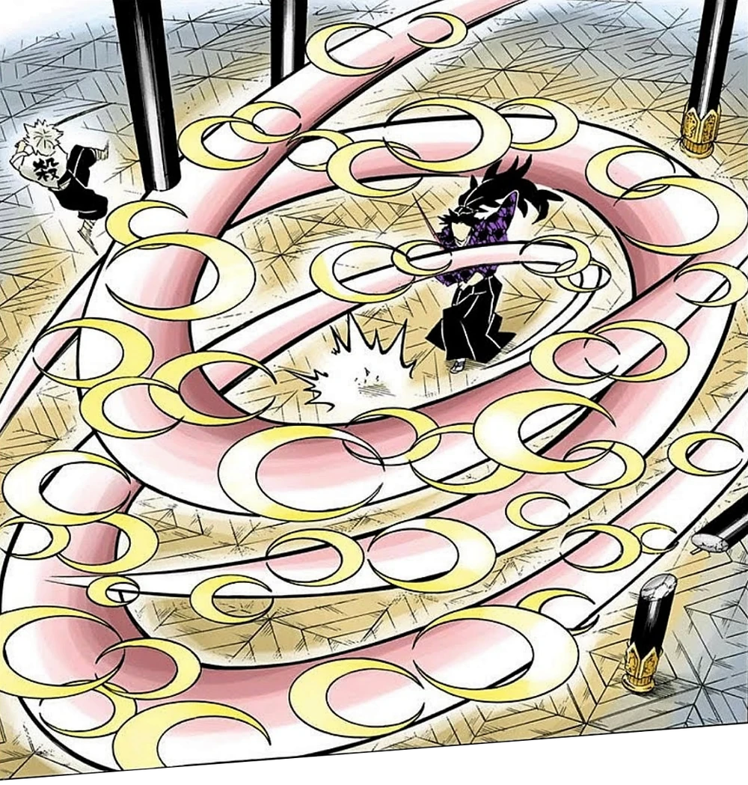
ПЯТЫЙ СТИЛЬ
Разрушительный вихрь призрачной луны
Кокушибо совершает множество изогнутых разрезов, накладывающихся друг на друга и напоминающих вихрь. Может исполнить эту атаку без взмаха мечом.
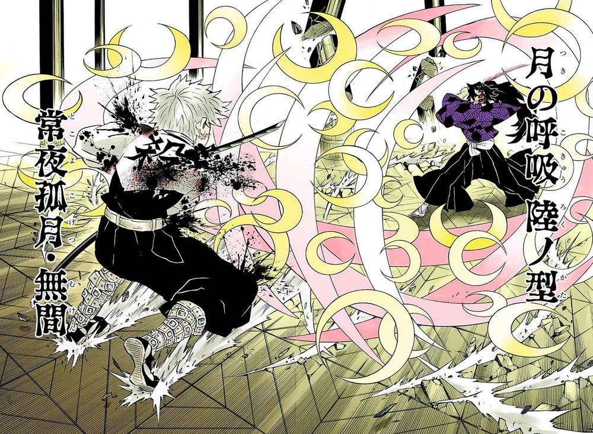
ШЕСТОЙ СТИЛЬ
Одинокая луна в бесконечной ночи Авичи
Кокушибо совершает множество разрезов во всевозможных направлениях.
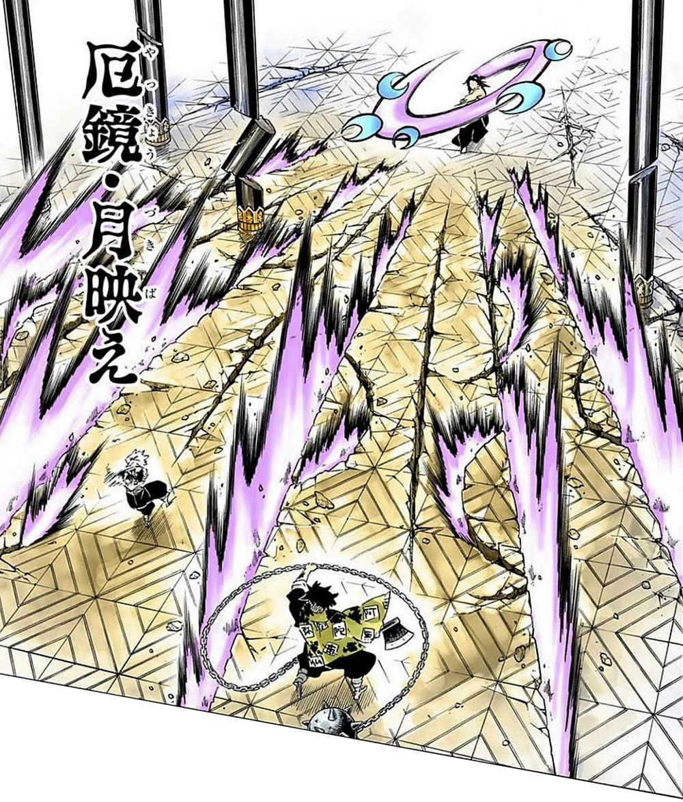
СЕДЬМОЙ СТИЛЬ
Зловещее зеркало: лунный блеск
Кокушибо делает мощный размах мечом, от которого расходятся ещё несколько атак, способных оставить на земле глубокие трещины.
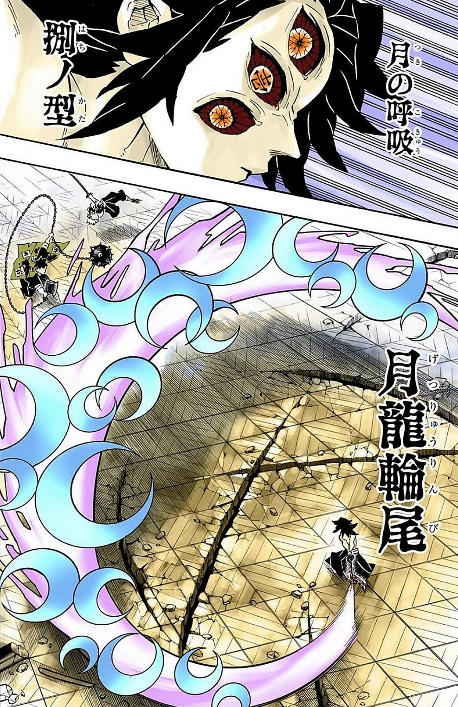
ВОСЬМОЙ СТИЛЬ
Лунный уроборос
Кокушибо совершает огромный разрез мечом, замыкающий пространство.
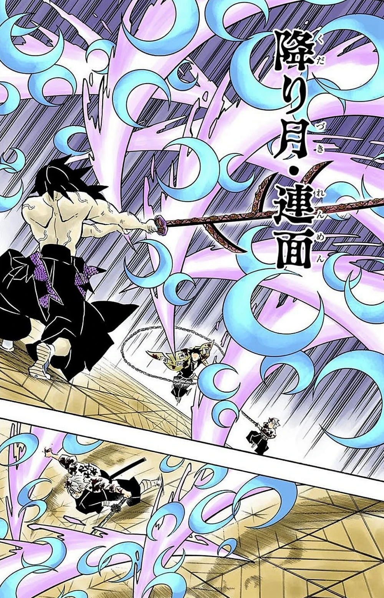
ДЕВЯТЫЙ СТИЛЬ
Убывающая луна: бесконечный пейзаж
Кокушибо выпускает нескончаемый поток разрезов, способных достичь цели на большом расстоянии.
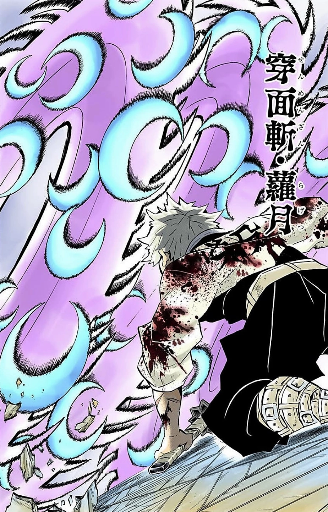
ДЕСЯТЫЙ СТИЛЬ
Срез: свет луны, пробивающийся сквозь бамбуковые листья
Кокушибо создаёт трёхслойный смерч, способный разрезать цель натрое.
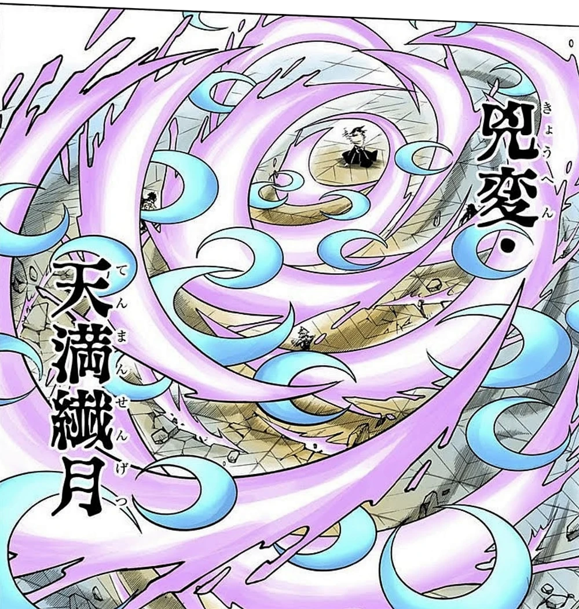
ЧЕТЫРНАДЦАТЫЙ СТИЛЬ
Бедствие — бессмертный гордый полумесяц
Кокушибо взмахивает мечом и создаёт хаотичный вихрь, разрушающий всё в радиусе атаки.
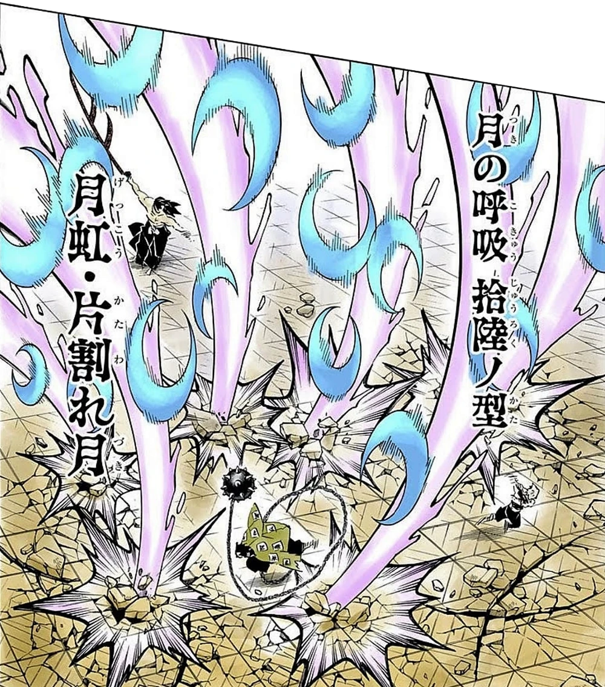
ШЕСТНАДЦАТЫЙ СТИЛЬ
Радужный полумесяц
Кокушибо совершает размах мечом, создавая шесть разрезов, направленных вниз на противников.